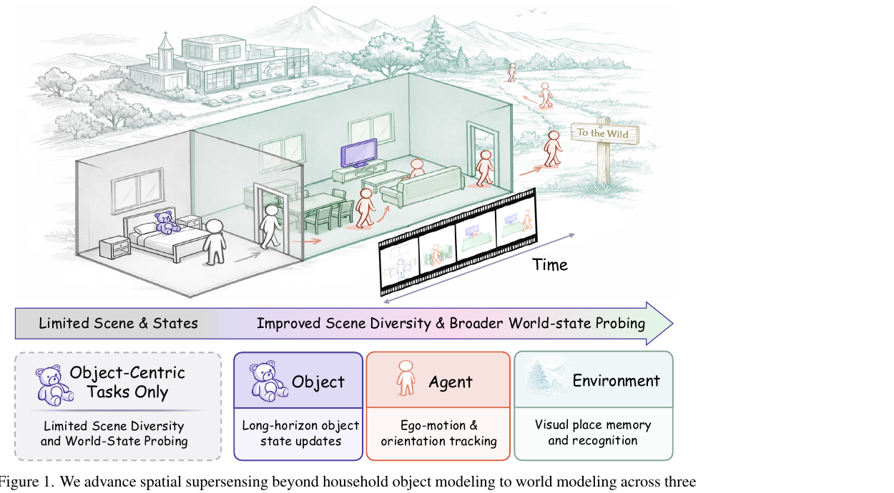
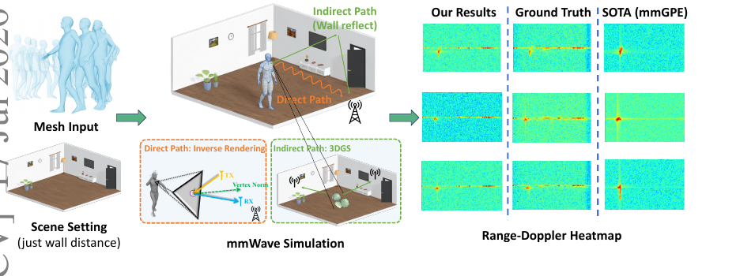
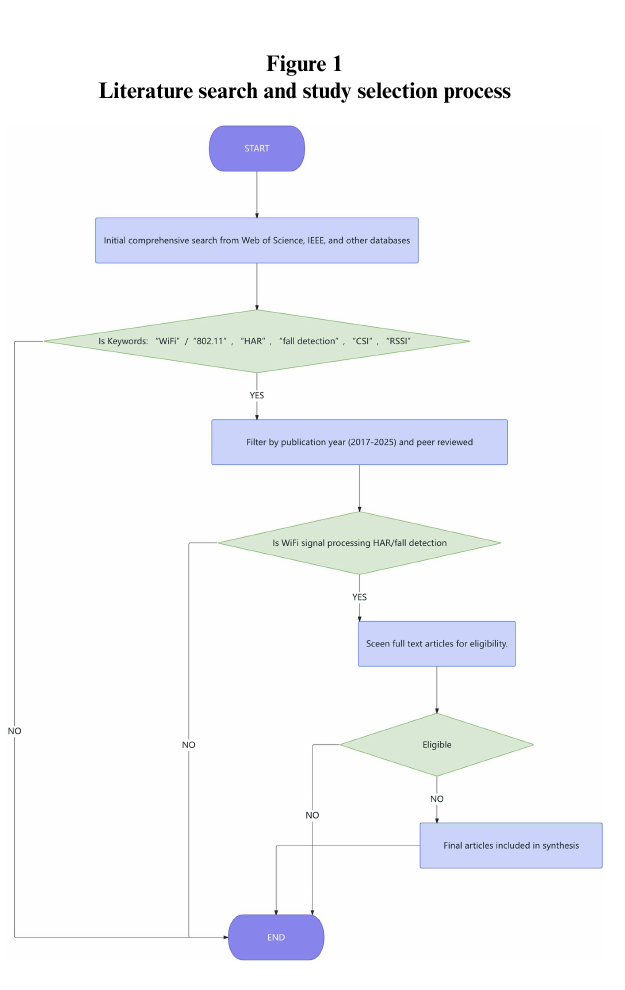

What
Spatial intelligence across sensing modalities
I study how intelligent systems can build and update an understanding of people, objects, and places over time. My work connects long-form visual reasoning with WiFi and mmWave sensing.
Research introduction · Spatial intelligence & embodied AI
I am Chua Kok Chung, a computer science researcher working across spatial supersensing, multimodal perception, wireless human sensing, and embodied intelligence.
My long-term goal is to develop general-purpose humanoid robots that can perceive changing environments, recognise human needs, and assist healthcare and nursing work safely and naturally.
Research perspective
What
I study how intelligent systems can build and update an understanding of people, objects, and places over time. My work connects long-form visual reasoning with WiFi and mmWave sensing.
Why
Healthcare and nursing settings are dynamic, crowded, and difficult to sense reliably. Useful robots must reason through viewpoint changes, occlusion, unfamiliar spaces, and incomplete observations.
How
I plan to combine spatial world modelling with complementary visual and wireless signals, then evaluate these representations through meaningful tasks on embodied systems.
Research plan
Develop representations that preserve identity, geometry, and temporal state across long sensory streams—not only recognise the content of individual frames.
Study when vision, WiFi, and mmWave signals can compensate for one another, particularly under occlusion, changing layouts, and cross-environment deployment.
Translate perception and world modelling into embodied capabilities, with evaluation centred on reliability, generalisation, and real value for healthcare and nursing support.
Questions I hope to discuss
Selected publications

ECCV 2026 · Spatial intelligence
Introduces VSI-Super-Wild, a benchmark for coherent spatial reasoning over long, real-world video. Its 442 videos and 6,980 verified question-answer pairs probe world state across the agent, objects, and environment.
Keywords: spatial supersensing, world modelling, long-form video, multimodal reasoning

ECCV 2026 · mmWave sensing
Combines inverse rendering for direct reflections with 3D Gaussian Splatting for site-specific multipath, enabling realistic radar-signal synthesis from dynamic human meshes.
Keywords: human sensing, mmWave synthesis, digital twins, neural representation

Artificial Intelligence and Applications · 2026
Reviews 26 studies with emphasis on deployment beyond controlled laboratories, identifying cross-environment robustness, public data, and reproducible benchmarking as central gaps.
Keywords: WiFi sensing, human activity recognition, fall detection, domain adaptation
Read paper ↗Background
2026–Present
2022–2026
2024
Open to research conversations and collaboration